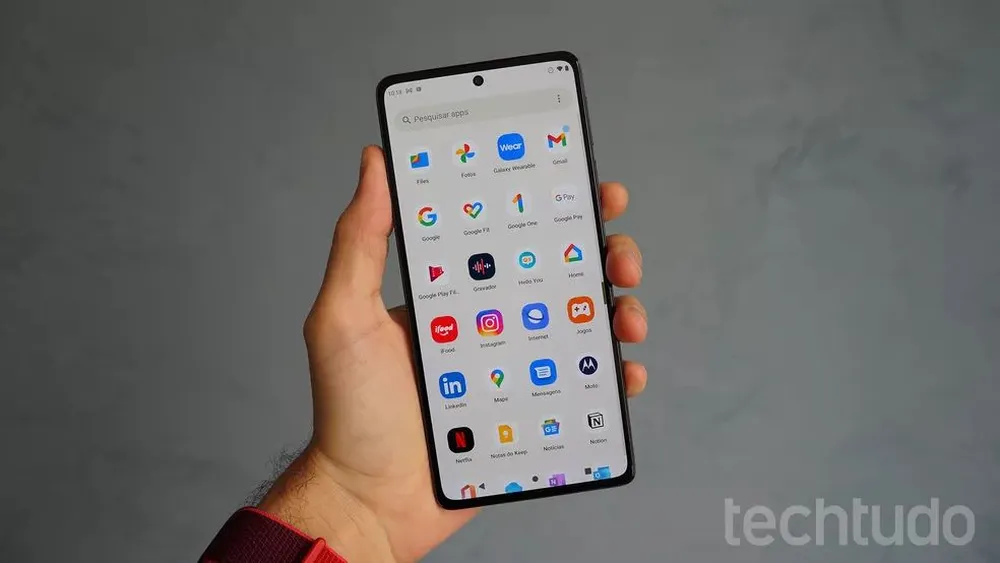
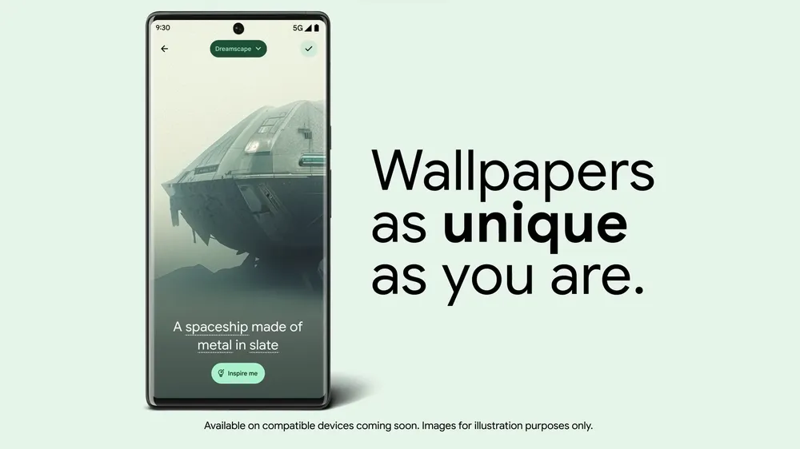

Android 14: Novas funções que marcaram 2023
O Android 14 foi lançado em outubro de 2023 pelo Google como novos recursos que marcaram os usuários e merecem ser relembrados. A atualização do sistema proporciona aos usuários alguns diferenciais como mais acessibilidade, privacidade, aprimoramento da câmera e customização da tela de bloqueio, incluindo papéis de parede gerados por Inteligência Artificial.
Inicialmente, os novos recursos foram disponibilizados apenas para celulares com Pixel compatíveis, mas agora o Android 14 já vem sendo implementado em outros dispositivos, como os celulares da Samsung e Xiaomi, por exemplo. A verificação de atualizações pode ser feita no menu de configurações e, em seguida, na opção de “Sistema”. Abaixo, relembre cinco funções marcantes da versão mais recente no Android.
Customização da tela de bloqueio
Uma das novidades lançadas com o Android 14 foi a possibilidade de mais personalização da tela de bloqueio. O sistema oferece diferentes estilos e cores de relógio, fontes e atalhos. Os papéis de parede também podem ser gerados por Inteligência Artificial. Os usuários podem escolher entre sugestões pré-definidas ou criar uma imagem do zero.
O usuário também consegue inserir uma customização na tela de bloqueio e outra na tela inicial, o que permite tornar a interface do dispositivo ainda mais exclusiva. Ainda não é possível adicionar widgets na tela de bloqueio do Android 14, algo que, segundo especulações, pode ser lançado em uma nova atualização.
Health Connect
O Health Connect veio para substituir o Google Fit e funciona como um facilitador para compartilhamento de dados com aplicativos de saúde. A ferramenta é responsável por armazenar dados de saúde como passos, calorias gastas durante o dia, frequência cardíaca, dificuldade de visão e muito mais. É possível gerenciar o compartilhamento dos dados para que aplicativos terceiros não usem as informações indevidamente, uma vez que são criptografadas.
É válido reforçar que o Health Connect já existia antes como um app independente da Google Play Store. No Android 14, o Google passou a integrar a funcionalidade diretamente no sistema para aumentar a segurança, comodidade e privacidade dos usuários. Para acessar a função, basta recorrer ao campo de privacidade, que fica dentro de configurações.